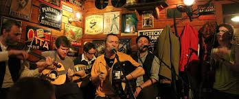
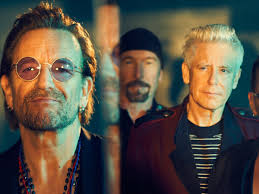

Ireland music
Ireland is a country with a well of differnet genres of music and over the years Irish artists have becomne famous all over the world for their music and there fame has in turn has thus brought to Ireland as a country.
U2
U2 are an Irish christian rock band from Dublin, made in 1976. The group consists of Bono, the Edge, Adam Clayton, and Larry Mullen Jr. They are currently preforming in the Vegas Sphere.[1]
Cranberries

The Cranberries are an Irish rock band made in Limerick, Ireland. The band was formed in 1989 by lead singer Niall Quinn, guitarist Noel Hogan, bassist Mike Hogan, and drummer Fergal Lawler.[1]
Thin Lizzy

Thin Lizzy were Irish hard rock band made in Dublin in 1969. Thin Lizzy initially consisted of bass guitarist, lead vocalist and principal songwriter Phil Lynott, drummer Brian Downey, guitarist Eric Bell.[1]